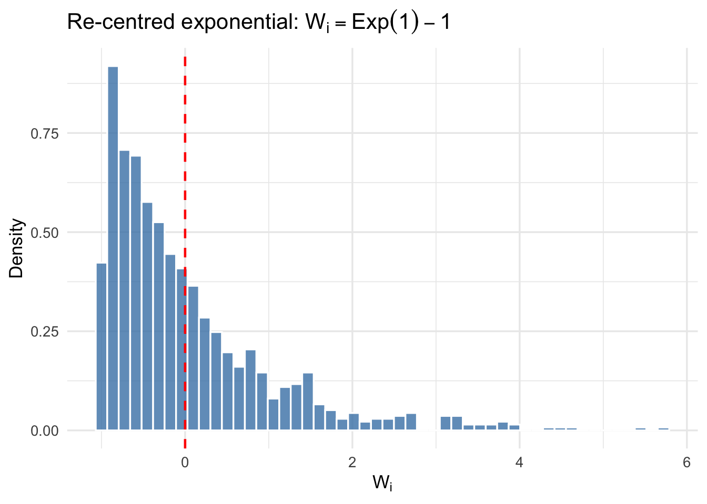

Load libraries and function library
rm(list = ls())
library(ggplot2)
source("../../programs/ACA_Function_Library.r")
set.seed(42, kind = "L'Ecuyer-CMRG")rm(list = ls())
library(ggplot2)
source("../../programs/ACA_Function_Library.r")
set.seed(42, kind = "L'Ecuyer-CMRG")The seed is fixed with the L’Ecuyer-CMRG generator, which is safe for parallel execution and ensures reproducibility across sessions.
Let \(W^{(n)} = (W_1, \ldots, W_n)\) be an i.i.d. sample drawn from an unknown distribution \(P\) on \(\mathbb{R}\). We wish to test
\[H_0 : \mathbb{E}[W] = 0 \quad \text{vs} \quad H_1 : \mathbb{E}[W] \neq 0.\]
This is a one-sample location problem: under \(H_0\) the distribution of \(W\) is centred at zero, but we make no further parametric assumption about its shape.
A natural test statistic is the studentised mean
\[T_n = T_n\!\left(W^{(n)}\right) = \frac{\bar{W}_n}{\hat{\sigma}_n / \sqrt{n}}, \qquad \bar{W}_n = \frac{1}{n}\sum_{i=1}^n W_i, \quad \hat{\sigma}_n^2 = \frac{1}{n-1}\sum_{i=1}^n (W_i - \bar{W}_n)^2.\]
Studentising removes the dependence on the unknown variance and ensures that \(T_n \xrightarrow{d} \mathcal{N}(0,1)\) under \(H_0\) by the central limit theorem, regardless of the shape of \(P\), provided \(\mathbb{E}[W^2] < \infty\).
Tn <- function(data, sample_size, studentized = FALSE) {
if (studentized) return(mean(data) / sqrt(var(data) / sample_size))
return(sqrt(sample_size) * mean(data))
}The function Tn() accepts a logical argument studentized. When studentized = TRUE it returns \(\bar{W}_n / (\hat{\sigma}_n/\sqrt{n})\); when FALSE it returns the non-studentised version \(\sqrt{n}\,\bar{W}_n\). All subsequent analyses use the studentised form.
We generate \(n = 1000\) observations from the re-centred exponential distribution:
\[W_i = \text{Exp}(1) - 1, \qquad i = 1, \ldots, n.\]
This DGP satisfies \(\mathbb{E}[W_i] = 0\), so \(H_0\) is true by construction. However, \(W_i\) has skewness \(+2\), which means it is not symmetric about zero. The asymmetry will be important when we discuss the randomization hypothesis in Chapter 4.
n <- 1000
B <- 499
alpha <- 0.05
W_n <- rexp(n, rate = 1) - 1
Tn_obs <- Tn(W_n, n, studentized = TRUE)
cat("Sample size n :", n, "\n")Sample size n : 1000 cat("Monte Carlo draws B :", B, "\n")Monte Carlo draws B : 499 cat("Significance level :", alpha, "\n")Significance level : 0.05 cat("Observed T_n :", round(Tn_obs, 4), "\n")Observed T_n : 0.254 df_w <- data.frame(W = W_n)
ggplot(df_w, aes(x = W)) +
geom_histogram(aes(y = after_stat(density)),
bins = 50, fill = "steelblue", colour = "white", alpha = 0.8) +
geom_vline(xintercept = 0, colour = "red", linetype = "dashed", linewidth = 0.8) +
labs(
x = expression(W[i]),
y = "Density",
title = expression("Re-centred exponential: " * W[i] == Exp(1) - 1)
) +
theme_minimal(base_size = 13)
The red dashed line marks zero. The distribution is clearly right-skewed: most mass lies close to zero but there is a long right tail, so the distribution is not symmetric about its mean.